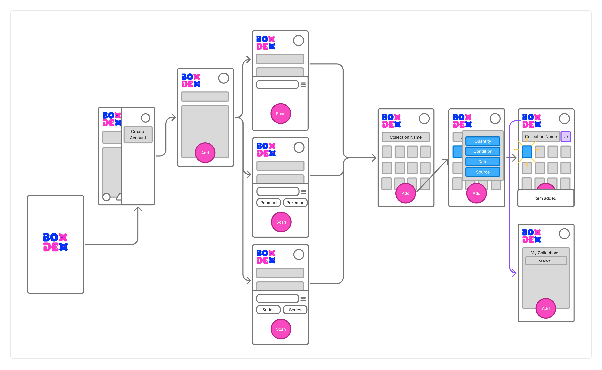

Designing a scalable collector platform from concept to product strategy in the emerging blind box market.

A booming market with an overlooked digital opportunity.
The blind box market is growing rapidly, fueled by an engaged collector community and strong repeat purchasing behavior. Yet while the physical hobby has evolved, the digital experience has lagged behind—creating an opportunity for a dedicated collector platform.
Market OverviewGlobal blind box market (2025).
Gen Z & Millennial collectors worldwide.
Annual growth, year over year.
A significant portion of spending comes from repeat collectors, indicating an engaged audience with ongoing collection needs.
Unboxing culture transformed collecting into a social experience. TikTok, YouTube, and Instagram have turned blind box discovery into shareable content.
Premium collectibles are becoming lifestyle products. Brands like POP MART demonstrate growing demand for designer collectibles beyond traditional toys.
Growing collections create management problems. As collectors accumulate more figures, tracking duplicates and organizing collections becomes increasingly difficult.
Collectors are moving toward digital-first experiences. Collection tracking, discovery, and community features are becoming valuable extensions of physical collecting.
Collectors are flying blind.
The blind box market has exploded, but the tools haven't kept up. Collectors spend thousands without knowing their odds, end up with stacks of duplicates, and have no easy way to trade, track, or show off their progress.
Duplicate Pile-Up
No simple way to log, trade, or sell repeated figures.
Zero Collection Tools
Collectors track everything in notes apps or spreadsheets.
Fragmented Community
Trading happens across Reddit, Discord, and Instagram with no trust layer.
Going In-Store to Understand the Experience
To better understand blind box culture and the collector experience, I organized a field visit for the team. By observing the browsing ritual, the anticipation of unboxing, and the emotional highs and lows of each pull, we gained firsthand insights that grounded our product decisions in real collector behaviors.
.png)
.png)
.png)
.png)
Choosing who we're building for, what problems to solve, and how Boxodex stands apart.
Based on our market research and field observations, we positioned Boxodex as a collector-first platform centered on collection management, discovery, and community. While the platform solves practical challenges like tracking and trading, it also recreates the excitement of unboxing digitally to celebrate the joy of collecting.
Strategy FrameworkWe approached this by identifying the audience with the strongest unmet needs and aligning the product around those priorities.
Casual–Semi-Serious Buyers
Buy 2–5 boxes per series.
Heavy Completionists
Chasing full-set ownership.
Trade-Focused Collectors
Reducing duplicates through trading.
New Collectors
Learning odds & rarity systems.
Collectors need more than a place to buy. They need a way to manage, discover, and connect.
Track Collections
Collectors need an easier way to organize their figures, monitor what they own, and identify missing pieces.
Reduce Duplicates
Collectors need better ways to manage duplicate figures and discover opportunities for trading.
Connect with Collectors
Collectors need a trusted space to share collections, exchange figures, and engage with the community.
The digital home for blind box collectors
Boxodex is a collector-first platform built specifically for blind box culture. Unlike generic inventory apps, it combines collection tracking, rarity insights, and community features into one dedicated experience.
Positioning Principles- Built for collector culture, not generic inventory management
- Rarity and discovery are central to the experience
- Community comes before transactions
Turning blind box collecting into a more connected and rewarding experience
Boxodex Helps Collectors- Organize and showcase their collections
- Track every pull and celebrate rare finds
- Trade duplicate figures with ease
- Connect with fellow collectors through a dedicated community
Beyond solving a user problem, we explored how Boxdex could become a sustainable platform. We developed a business model that balances user value with long-term growth, beginning with an MVP and expanding through premium features, marketplace services, and strategic partnerships.
Revenue ModelFreemium
- Free collection tracking
- Limited storage
Premium Subscription
- Unlimited collection storage
- Advanced collection insights
- Verified collector profile
Marketplace Commission
- Small fee on successful trades or sales
Brand Partnerships
- Retail collaborations
- Sponsored campaigns
- Affiliate opportunities
Collector Communities
Reach existing enthusiasts through social platforms and forums.
Retail Partnerships
Introduce Boxdex at the point of purchase.
Creator Collaborations
Build credibility through collector influencers.
Word of Mouth
Encourage organic growth through collection sharing and trading.
The product grows because user activity feeds the ecosystem. Every loop through the cycle drives more collecting, sharing, and buying.
Collector
Loop

- Product development
- Backend infrastructure
- UX/UI design
- Research
- Cloud storage
- Payment processing
- Moderation
- Marketing
Getting Boxdex into collectors' hands.
A phased roadmap to validate the core collector experience before investing in marketplace and community features.
Validate (MVP)
- iOS & Android MVP
- Freemium model
- Collection tracking
- Rarity engine
- Token & POP MART integration
Validate product-market fit.
Expand
- Marketplace
- Trading
- Influencer partnerships
Increase engagement and retention.
Scale
- Brand collaborations
- Community features
- Leaderboards
- Collection events
Build network effects and diversify revenue.
Structuring the collector journey.
Before visual design, we mapped how collectors would actually move through Boxdex, from a first-time download to the daily habit of logging, trading, and showing off a collection. This early structure leaned on our secondary research into collector psychology, including scarcity, uncertainty, and the desire for control, to identify which flows and features mattered most.
Task FlowWe mapped the step-by-step screen actions behind two core tasks — adding a piece to a collection and buying more storage credits — to pressure-test the interface before any visual design began.
User FlowZooming out from any single task, the user flow maps a new collector's broader path — from first hearing about Boxdex to forming a repeat habit around it.
 Medium Fidelity Wireframes
Medium Fidelity Wireframes
Initial layout exploration for the core flow: app open → add item to collection.

 07 · Brand Identity
07 · Brand Identity
Bringing the joy of collecting into the digital experience.
Rather than treating Boxodex as a utility for tracking collections, we wanted it to capture the excitement that makes blind box collecting so engaging. Our market research and field observations revealed that the anticipation of opening a box, the thrill of discovering a rare figure, and the satisfaction of completing a collection are central to the collector experience.
To extend those emotions beyond the physical purchase, we invested heavily in the brand identity and visual design. Every element was designed to make the digital experience feel playful, rewarding, and unmistakably part of blind box culture.
Our Brand Identity Focused On-
 A playful visual identity that reflects the excitement of collecting.
A playful visual identity that reflects the excitement of collecting.
-
 Bright, energetic colors that evoke surprise, joy, and celebration.
Bright, energetic colors that evoke surprise, joy, and celebration.
-
 Meaningful motion and micro-interactions that recreate the anticipation and delight of unboxing.
Meaningful motion and micro-interactions that recreate the anticipation and delight of unboxing.
-
 A collector-first interface that encourages continued engagement long after the purchase.
A collector-first interface that encourages continued engagement long after the purchase.
To move fast without sacrificing quality, each of us explored different AI tools, contributed ideas, and discussed pros and cons as a group before voting with the other designers to decide on a final design direction. I used Google Stitch to rapidly prototype the dark mode aesthetic before refining it into a solid design system of card components and button styles.
We focused on delivering the core collector experience as quickly as possible, prioritizing the essential features needed for an MVP. By launching with a strong visual foundation and clear brand identity, we can iterate on the product based on real user feedback while staying consistent with Boxdex's playful, collector-driven aesthetic.

Bringing the interface to life.
With the information architecture validated, we moved into high-fidelity screens — translating the wireframes and brand system into a polished, tappable interface.
Hi-Fi Prototype
What I'd do differently.
Early on, I relied heavily on academic literature to shape our design direction, and that research made certain choices feel obvious. But our teammate Ashley is a genuine blind box collector, and her firsthand knowledge repeatedly challenged assumptions the research seemed to support. Academic studies establish patterns at scale, but they can't fully capture the nuance of lived experience.
Next time, I'd bring domain experts into the process from the start, not just as a gut check afterward.
I sometimes defaulted to my own preferences instead of considering how others might feel; the profile page is a good example.
Next time, I'd step back and think about the most unbiased approach before designing point-blank.